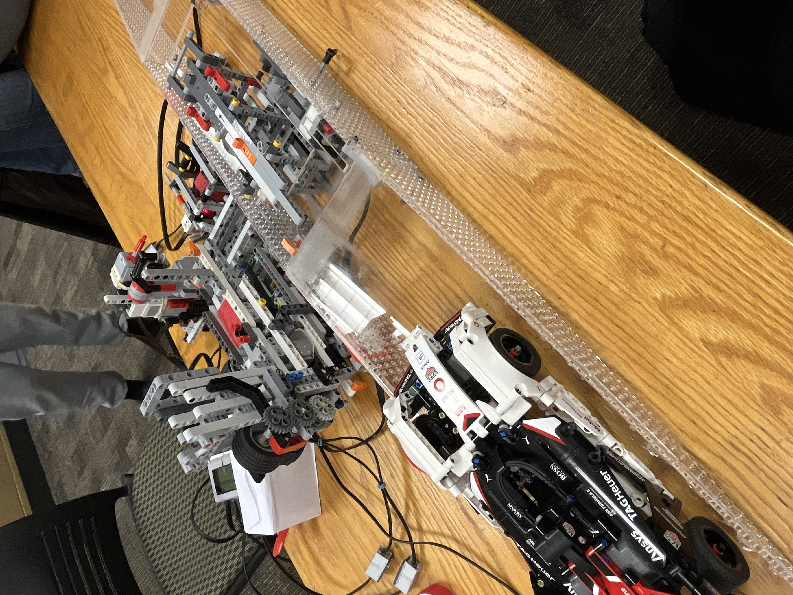
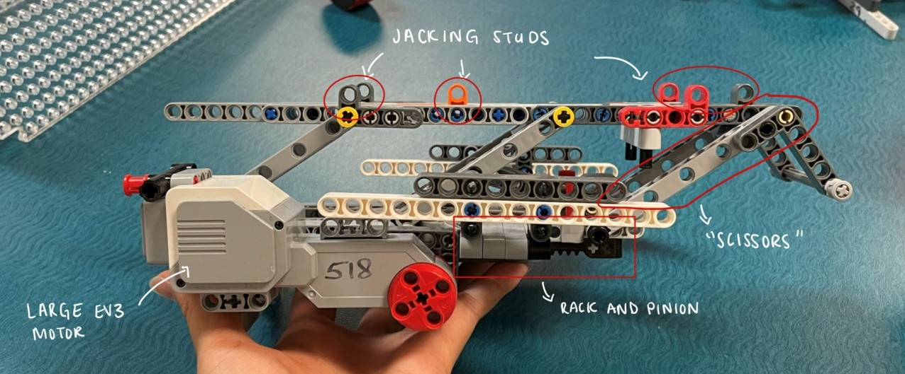
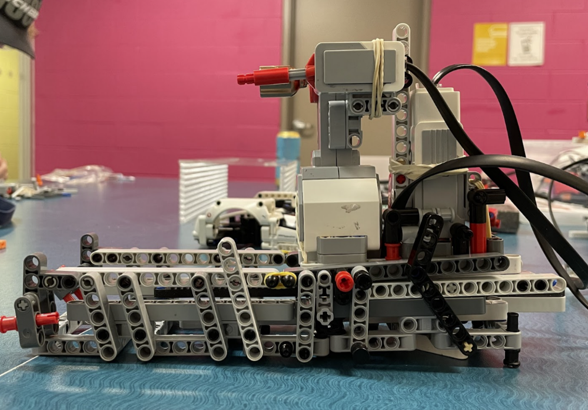
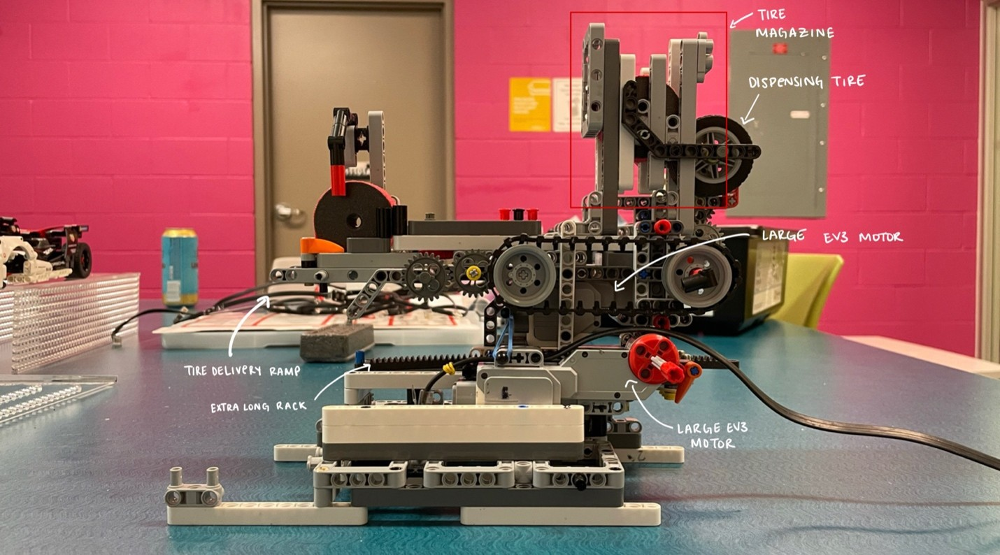
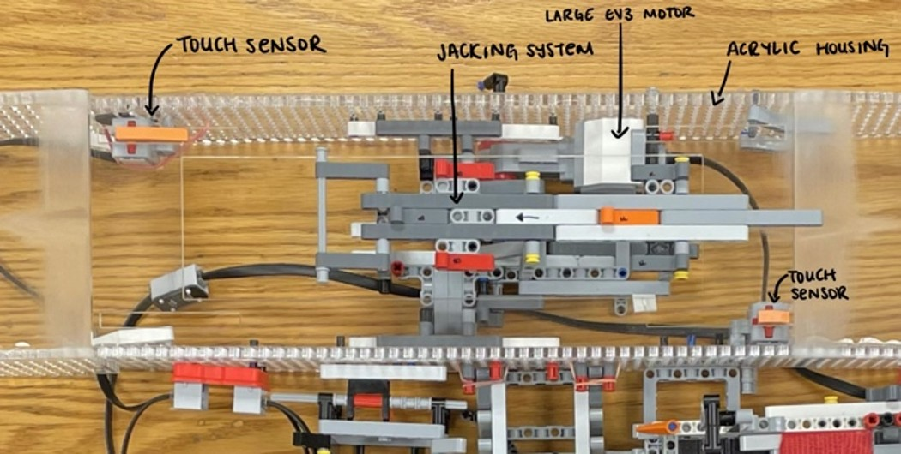
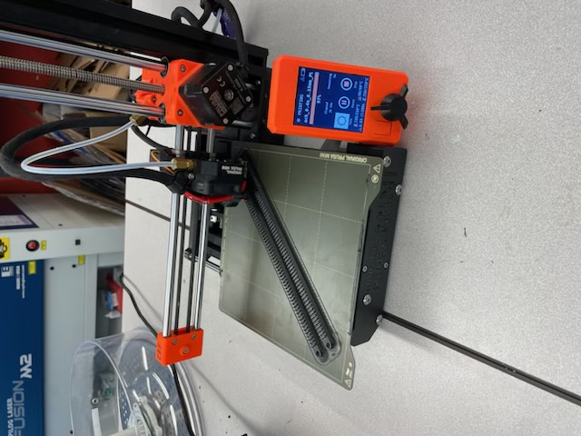
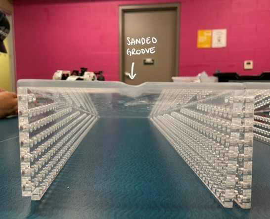
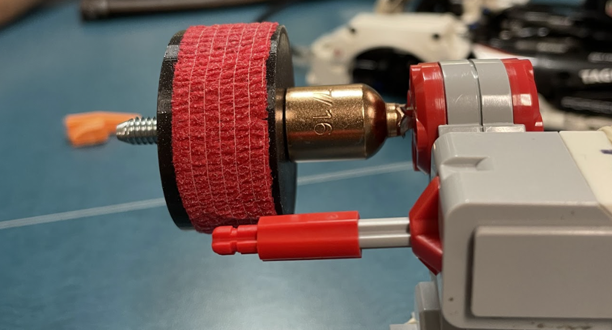

University of Waterloo
Automated Tire Changing Robot
Designing and building an autonomous system capable of replacing a wheel on an RC vehicle.
Role
Software, Integration & Design
Focus
Robotics · Mechanical Design · Automation · System Integration
Tools
LEGO EV3 · C++ · CAD · 3D Printing · Laser Cutting · Machining
01 Project Overview
The project challenged our team to design and build an automated system capable of replacing a wheel on an RC vehicle without manual intervention. The final system combined vehicle lifting, wheel removal and installation, and replacement-wheel handling into one automated sequence.
My Role
My primary ownership was the software used to control general motor functions and coordinate automated system movement. I also supported mechanical design, assembly, system integration, and development of the final technical documentation.

02 System Architecture
A coordinated mechanical system combined vehicle lifting, wheel removal, and replacement-wheel handling.
Jacking System
The vehicle was raised using a scissor-style lifting mechanism actuated through a rack-and-pinion system.
Wheel Removal
A motorized carriage positioned the removal mechanism at the wheel and used a magnetized socket to remove and reinstall the wheel fastener.
Tire Replacement
A perpendicular carriage managed replacement-wheel delivery and removal of the old wheel.



03 Software & Automation
Developing reusable motor-control functions to coordinate automated system movement.
The Challenge
The robot relied on multiple motor-driven mechanisms that needed predictable movement during the automated tire-changing sequence. Rather than embedding individual motor commands throughout the program, the software needed a reusable way to control different motors consistently.
My Contribution
I developed the general motor-control functionality used throughout the robot's software. The function accepted parameters including motor selection, motor power, and encoder count, allowing different mechanisms to use the same underlying control logic.
This created a reusable software layer for commanding motor movement while allowing each subsystem to define its required direction, speed, and travel.
04 Integration & Assembly
Bringing the mechanical and software systems together into a functioning prototype.
Mechanical Integration
I supported general assembly and mechanical design as the individual subsystems were integrated into the final robot.
System Integration
I helped connect the motor-control software with the physical mechanisms, supporting testing and iteration as the complete automated sequence was developed.

05 Design & Fabrication
Turning the concept into a physical prototype through rapid manufacturing and iteration.
The final prototype combined several manufacturing methods, including 3D-printed components, laser-cut acrylic structures, and machined components.
3D Printing
Custom racks, wheels, sensor components, and supporting geometry.
Laser Cutting
Acrylic structural components and vehicle ramps.
Machining
Custom components required for the wheel-removal mechanism.



06 Engineering Documentation
Documenting the system architecture, design decisions, software, testing, and final performance.
I wrote a significant portion of the project's final technical report, documenting the system architecture, mechanical design, software, testing, and key engineering decisions made throughout development.
The documentation created a traceable record of how the system was designed and validated, including why design decisions were made and how the mechanical, electrical, and software subsystems interacted. This made the final design easier to understand, evaluate, reproduce, and build upon
07 Results
The final robot successfully completed the automated single-wheel replacement sequence:
~45 s
Automated Tire-Change Cycle
The final prototype successfully completed the automated tire-changing sequence. The system met the majority of the project's engineering specifications, although cycle time and final jack height remained areas for improvement.
08 Engineering Takeaways
Modular Software
Reusable control functions made it easier to apply common motor behavior across different mechanical subsystems.
System Integration
Mechanical, electrical, and software design cannot be developed completely independently; the behavior of each subsystem affects the others.
Engineering Communication
Building the system was only part of the project. Clearly documenting design decisions, testing, limitations, and results was critical to communicating the final engineering work.